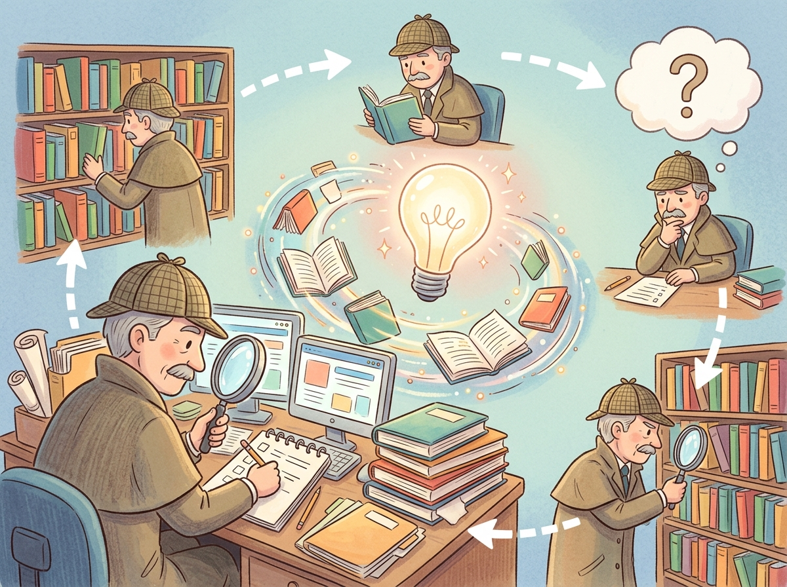

The best researchers do not simply search once. They search, reflect, refine, and search again until the full picture emerges.
RAG, Relentlessly Curious AI Agent
Naive RAG performs a single retrieval step, but complex research questions require multiple rounds of searching, reading, reflecting, and refining. Agentic RAG systems give the LLM the ability to decide what to search for, evaluate whether retrieved results are sufficient, generate follow-up queries, and synthesize findings from multiple sources. Building on the advanced retrieval techniques from Section 18.2, this transforms RAG from a simple retrieve-and-generate pattern into an autonomous research workflow that can tackle multi-faceted questions requiring information from diverse sources: document stores, web search, databases, and APIs.
Prerequisites
Agentic RAG combines the retrieval techniques from Section 18.1 and Section 18.2 with the agent design patterns that will be explored in depth in Section 20.1. You should understand basic prompt engineering from Section 11.1, as the agent loop relies on well-structured prompts to decide when and how to retrieve information.

18.4.1 From Single-Shot to Iterative Retrieval
Consider the research question: "How do the climate policies of the top 5 GDP countries compare in their approach to carbon taxation, and what evidence exists for the effectiveness of each approach?" This question cannot be answered with a single retrieval step. It requires identifying the top 5 GDP countries, finding each country's climate policy, extracting carbon taxation details, finding effectiveness studies for each approach, and then synthesizing the comparison.
Agentic RAG addresses this by giving the LLM a loop: plan what information is needed, retrieve it, evaluate whether it is sufficient, and either proceed to synthesis or generate follow-up queries. This iterative approach mirrors how a human researcher would tackle such a question, and it directly applies the agentic design patterns covered in Chapter 20.
Agentic RAG systems can sometimes spiral into what practitioners call "research rabbit holes," where the agent keeps generating follow-up queries that get progressively further from the original question. Setting a maximum iteration count is less about compute cost and more about preventing your AI from writing a dissertation when you asked for a paragraph.
18.4.1.1 Query Decomposition
Query decomposition is where agentic RAG diverges most sharply from traditional RAG. In naive RAG, the user's question goes directly to the retriever. In agentic RAG, the LLM first plans the research strategy, much like a librarian who reads your question, thinks about which sections of the library to visit, and decides the order of lookups before pulling a single book off the shelf.
The first step in agentic RAG is decomposing a complex query into smaller, answerable sub-queries. Each sub-query targets a specific piece of information needed to construct the final answer. The decomposition can be sequential (each sub-query depends on the previous answer) or parallel (sub-queries are independent and can be executed concurrently). illustrates the agentic RAG loop from decomposition through synthesis.
# implement decompose_query
from openai import OpenAI
import json
import asyncio
client = OpenAI()
def decompose_query(query):
"""Break a complex question into sub-queries."""
response = client.chat.completions.create(
model="gpt-4o",
messages=[{
"role": "system",
"content": """Decompose the user's research question into
sub-queries. Return JSON with:
- "sub_queries": list of specific, searchable questions
- "dependencies": dict mapping query index to indices
it depends on (empty list if independent)
- "strategy": "parallel" or "sequential"
Keep sub-queries focused and searchable."""
}, {
"role": "user",
"content": query
}],
response_format={"type": "json_object"}
)
return json.loads(response.choices[0].message.content)
# Example usage
plan = decompose_query(
"How do carbon tax policies in the EU and US compare, "
"and what evidence exists for their effectiveness?"
)
# Returns sub-queries like:
# 1. "What are the current carbon tax policies in the EU?"
# 2. "What are the current carbon tax policies in the US?"
# 3. "What studies evaluate EU carbon tax effectiveness?"
# 4. "What studies evaluate US carbon pricing effectiveness?"18.4.2 Parallel Search and Multi-Source Retrieval
Once sub-queries are generated, an agentic RAG system can execute searches in parallel across multiple sources. Unlike naive RAG, which searches a single vector store, agentic RAG can simultaneously query document stores, web search APIs, databases, and specialized APIs, then combine results from all sources.
# Implementation example
# See inline comments for step-by-step details.
import asyncio
from typing import List, Dict
async def search_web(query: str) -> List[Dict]:
"""Search the web using a search API."""
# Implementation with Tavily, Serper, or Brave Search
pass
async def search_documents(query: str, collection) -> List[Dict]:
"""Search internal document store."""
results = collection.query(query_texts=[query], n_results=5)
return [{"text": d, "source": "internal_docs"}
for d in results["documents"][0]]
async def search_database(query: str) -> List[Dict]:
"""Convert query to SQL and search database."""
# Text-to-SQL pipeline (covered in Section 18.5)
pass
async def multi_source_search(sub_queries: List[str], collection):
"""Execute sub-queries in parallel across sources."""
all_results = {}
async def search_one(query):
# Search all sources in parallel for each query
web, docs, db = await asyncio.gather(
search_web(query),
search_documents(query, collection),
search_database(query),
return_exceptions=True
)
return {
"query": query,
"web": web if not isinstance(web, Exception) else [],
"docs": docs if not isinstance(docs, Exception) else [],
"db": db if not isinstance(db, Exception) else []
}
# Execute all sub-queries in parallel
tasks = [search_one(q) for q in sub_queries]
results = await asyncio.gather(*tasks)
return results
18.4.3 Iterative Refinement and Follow-Up Generation
After initial retrieval, the agent evaluates whether the gathered information is sufficient to answer the original question. If gaps remain, the agent generates follow-up queries targeting the missing information. This loop continues until the agent determines it has enough evidence or reaches a maximum iteration limit.
# implement evaluate_and_refine
def evaluate_and_refine(original_query, gathered_info, max_iterations=3):
"""Iteratively refine retrieval until sufficient."""
for iteration in range(max_iterations):
# Ask the LLM to evaluate sufficiency
eval_response = client.chat.completions.create(
model="gpt-4o",
messages=[{
"role": "system",
"content": """Evaluate whether the gathered information is
sufficient to comprehensively answer the question.
Return JSON with:
- "sufficient": true/false
- "missing": list of what information is still needed
- "follow_up_queries": list of queries to fill gaps
- "confidence": 0.0 to 1.0"""
}, {
"role": "user",
"content": f"""Original question: {original_query}
Gathered information:
{json.dumps(gathered_info, indent=2)}"""
}],
response_format={"type": "json_object"}
)
evaluation = json.loads(
eval_response.choices[0].message.content
)
if evaluation["sufficient"] or evaluation["confidence"] > 0.85:
return gathered_info, evaluation
# Execute follow-up queries
follow_ups = evaluation["follow_up_queries"]
new_info = retrieve_for_queries(follow_ups)
gathered_info.extend(new_info)
return gathered_info, evaluationProduction agentic RAG systems must balance thoroughness with cost and latency. Each iteration involves LLM calls for evaluation and follow-up generation, plus retrieval costs. Common budget strategies include: (1) a hard iteration cap (typically 3 to 5 rounds), (2) a total token budget across all iterations, (3) diminishing returns detection (stop when new iterations add little new information), and (4) time budgets for latency-sensitive applications.
18.4.4 Source Credibility Assessment
Not all retrieved sources are equally trustworthy. A critical feature of agentic RAG systems is the ability to assess source credibility and weight information accordingly. This is especially important when combining web search results (which may include misinformation) with curated internal documents. Figure 18.4.3 shows how credibility scores weight retrieved information before it reaches the LLM.
18.4.4.1 Credibility Signals
- Source authority: Is the source a recognized authority in the domain? Academic papers, government agencies, and established organizations carry more weight than anonymous blogs.
- Recency: For time-sensitive topics, more recent sources are generally preferred. A 2024 policy document supersedes a 2019 version.
- Consistency: Claims corroborated by multiple independent sources are more reliable than claims from a single source.
- Specificity: Sources that provide specific data, citations, and methodology are more credible than those making vague claims.
- Bias indicators: Sources with obvious commercial interests, political slant, or advocacy goals should be flagged and their claims treated with additional scrutiny.
18.4.5 Synthesis and Report Generation
The final stage of agentic RAG synthesizes all gathered information into a coherent, cited response. For complex research questions, this often means generating a structured report with sections, findings from multiple sources, points of agreement and disagreement, and explicit citations. Evaluating the quality of these synthesized reports requires the evaluation frameworks covered in Chapter 24.
# implement synthesize_research
def synthesize_research(original_query, gathered_info, credibility_scores):
"""Synthesize gathered information into a research report."""
# Sort by credibility, place highest-trust sources first
sorted_info = sorted(
zip(gathered_info, credibility_scores),
key=lambda x: x[1],
reverse=True
)
context = "\n\n".join([
f"[Source {i+1} | Credibility: {score:.1f}/5]\n{info['text']}"
for i, (info, score) in enumerate(sorted_info)
])
response = client.chat.completions.create(
model="gpt-4o",
messages=[{
"role": "system",
"content": """You are a research analyst. Synthesize the
provided sources into a comprehensive answer.
Guidelines:
- Cite sources by number [Source N]
- Note where sources agree or disagree
- Flag claims supported by only one source
- Prioritize high-credibility sources
- Acknowledge gaps in the evidence
- Structure the answer with clear sections"""
}, {
"role": "user",
"content": f"""Research Question: {original_query}
Sources:
{context}"""
}],
temperature=0.2
)
return response.choices[0].message.contentThe most effective synthesis prompts instruct the LLM to handle source disagreement explicitly rather than silently picking one version. When two high-credibility sources contradict each other, the system should present both perspectives with their supporting evidence and let the reader decide. This "epistemic honesty" approach builds far more user trust than confidently presenting a single answer that papers over genuine uncertainty.
18.4.6 Deep Research Architectures
Several production systems have implemented deep research capabilities that go well beyond simple agentic RAG. These systems typically combine query planning, multi-source retrieval, iterative refinement, and long-form synthesis into a unified workflow.
18.4.6.1 Architecture Comparison
| Feature | Naive RAG | Agentic RAG | Deep Research |
|---|---|---|---|
| Retrieval steps | 1 | 2 to 5 | 10+ |
| Sources | Single vector store | Multiple stores | Web + docs + DB + APIs |
| Query planning | None | Decomposition | Hierarchical plan tree |
| Self-evaluation | None | Sufficiency check | Multi-criteria assessment |
| Output format | Short answer | Cited answer | Structured report |
| Typical latency | 2 to 5 seconds | 10 to 30 seconds | 1 to 10 minutes |
| Cost per query | $0.01 to $0.05 | $0.05 to $0.50 | $0.50 to $5.00 |
Agentic RAG introduces new failure modes beyond those of naive RAG. Query drift occurs when follow-up queries gradually shift away from the original question, retrieving increasingly irrelevant information. Infinite loops occur when the agent never reaches a "sufficient" evaluation. Conflation occurs when the agent mixes information from different sub-queries, creating false associations. Mitigate these with hard iteration limits, query relevance checks against the original question, and explicit source tracking throughout the pipeline. Figure 18.4.4 lays out the full deep research pipeline with its iterative phases.
Show Answer
Show Answer
Show Answer
Show Answer
Show Answer
Combine vector similarity with keyword search (BM25) using reciprocal rank fusion. Vector search catches semantic matches while BM25 catches exact terms, acronyms, and IDs that embedding models often miss. This hybrid approach typically improves recall by 10 to 20%.
- Agentic RAG transforms retrieval into research: By giving the LLM a plan-retrieve-evaluate loop, complex multi-faceted questions become tractable through iterative decomposition and refinement.
- Query decomposition is the foundation: Breaking complex questions into focused sub-queries (parallel or sequential) enables targeted retrieval and prevents the system from missing critical pieces of information.
- Multi-source retrieval combines complementary strengths: Web search provides breadth and recency; document stores provide curated depth; databases provide structured data. Searching all three in parallel yields the most comprehensive results.
- Source credibility prevents misinformation amplification: Assessing authority, recency, consistency, specificity, and bias before synthesis ensures the final answer is grounded in trustworthy evidence.
- Budget your agent carefully: Each iteration costs money and time. Use hard iteration limits, diminishing returns detection, and relevance checks to prevent runaway costs and query drift.
Who: A strategy analyst and an ML engineer at a venture capital firm
Situation: Analysts spent 8 to 12 hours per company compiling competitive landscape reports by manually searching SEC filings, news articles, patent databases, and industry publications.
Problem: A single RAG query could not answer complex questions like "How has Company X's AI strategy evolved over the past three years, and how does it compare to their top two competitors?" This required synthesizing dozens of sources across multiple time periods.
Dilemma: Running a fully autonomous agent with web search access risked runaway API costs (one early prototype spent $47 on a single query by iterating 80 times). Limiting iterations to 5 produced shallow, incomplete reports.
Decision: They built an agentic RAG system with a plan-then-execute architecture: the planner decomposed each research question into 5 to 8 sub-questions, each sub-question was answered independently with a 10-iteration budget, and a final synthesis step merged findings into a structured report.
How: Each sub-agent used adaptive retrieval (checking if existing context already answered the question before issuing new searches). A cost monitor enforced a $5 ceiling per report. The system used Tavily for web search and a local vector store for previously ingested documents.
Result: Report generation time dropped from 10 hours to 25 minutes. Analysts rated the automated reports as "comparable quality" to manual reports for 73% of queries. Average cost per report was $2.80.
Lesson: Deep research agents need explicit budgets (both iteration count and dollar cost), a plan-then-execute structure, and deduplication to avoid redundant searches. Unbounded iteration is the fastest path to wasted spend.
# Agentic RAG with LlamaIndex: a router agent picks WHICH index to query.
# Two indices (SEC filings + news) are exposed as tools; the agent decides
# whether each user query needs filings, news, both, or neither.
from llama_index.core import VectorStoreIndex, SimpleDirectoryReader
from llama_index.core.tools import QueryEngineTool, ToolMetadata
from llama_index.core.agent import ReActAgent
from llama_index.llms.openai import OpenAI
# Build two separate indices over different document sets
sec_index = VectorStoreIndex.from_documents(SimpleDirectoryReader("./sec_filings").load_data())
news_index = VectorStoreIndex.from_documents(SimpleDirectoryReader("./news").load_data())
# Wrap each as a tool the agent can call
tools = [
QueryEngineTool(
query_engine=sec_index.as_query_engine(similarity_top_k=5),
metadata=ToolMetadata(
name="sec_filings",
description="Search SEC 10-K/10-Q filings for financial statements, risks, governance.",
),
),
QueryEngineTool(
query_engine=news_index.as_query_engine(similarity_top_k=5),
metadata=ToolMetadata(
name="news",
description="Search recent news articles for analyst opinions, market events, breaking news.",
),
),
]
llm = OpenAI(model="gpt-4o-mini", temperature=0.0)
agent = ReActAgent.from_tools(tools, llm=llm, verbose=True)
# Agent decides which tool(s) to call and synthesizes a citation-grounded answer
response = agent.chat("How did NVIDIA's data-center revenue change in Q3, and what do analysts attribute it to?")
print(response)QueryEngineTools, and a ReActAgent orchestrates multi-source retrieval to answer complex comparative questions.LlamaIndex (pip install llama-index) provides high-level abstractions for building agentic RAG systems. Its QueryEngineTool wraps retrieval pipelines as tools that an agent can invoke, and the ReActAgent handles the plan-retrieve-evaluate loop automatically.
# pip install llama-index llama-index-llms-openai
from llama_index.core import VectorStoreIndex, SimpleDirectoryReader
from llama_index.core.tools import QueryEngineTool, ToolMetadata
from llama_index.core.agent import ReActAgent
from llama_index.llms.openai import OpenAI
# Build indices over different document collections
sec_docs = SimpleDirectoryReader("./data/sec_filings").load_data()
news_docs = SimpleDirectoryReader("./data/news_articles").load_data()
sec_index = VectorStoreIndex.from_documents(sec_docs)
news_index = VectorStoreIndex.from_documents(news_docs)
# Wrap each index as a tool the agent can call
tools = [
QueryEngineTool(
query_engine=sec_index.as_query_engine(),
metadata=ToolMetadata(
name="sec_filings",
description="Search SEC filings for financial data",
),
),
QueryEngineTool(
query_engine=news_index.as_query_engine(),
metadata=ToolMetadata(
name="news_search",
description="Search recent news articles",
),
),
]
agent = ReActAgent.from_tools(tools, llm=OpenAI(model="gpt-4o"), verbose=True)
response = agent.chat("Compare NVIDIA's AI revenue growth to AMD's.")Planning-based RAG agents decompose complex queries into retrieval plans before executing any searches, improving both efficiency (fewer unnecessary retrievals) and coverage (systematic exploration of the query space). Tool-augmented retrieval extends agentic RAG with access to calculators, code interpreters, and external APIs, enabling the agent to answer questions that require computation or real-time data. Multi-agent RAG assigns different retrieval strategies to specialized agents (one for dense search, one for structured queries, one for web search) that collaborate through a shared workspace. Research into retrieval agent safety is developing guardrails that prevent agents from executing harmful or privacy-violating queries.
Exercises
These exercises cover agentic RAG and deep research patterns.
Explain why a single retrieval step is insufficient for complex research questions. Give an example of a question that requires iterative retrieval.
Show Answer
Complex questions have information dependencies: the answer to one sub-question determines what to search next. Example: "How does Company X's revenue growth compare to its main competitors over the last 5 years?" requires first identifying competitors, then finding revenue data for each.
Define query drift in the context of agentic RAG. How can you detect and prevent it?
Show Answer
Query drift occurs when follow-up queries gradually shift away from the original topic. Detect it by computing semantic similarity between each follow-up query and the original question. Prevent it by always including the original question as context when generating follow-up queries, and by setting a maximum drift threshold.
You are building a medical research agent. How would you implement source credibility assessment to prioritize peer-reviewed studies over blog posts?
Show Answer
Assign credibility scores based on: (a) source type (peer-reviewed journal > preprint > blog), (b) publication recency, (c) author credentials if available, (d) citation count. Use these scores as weights when assembling the context window, giving more space to higher-credibility sources.
An agentic RAG system decides when it has "enough" information to answer. What criteria should this sufficiency check use? What happens if the threshold is too high or too low?
Show Answer
Criteria: all sub-questions answered, no contradictions between sources, information is recent enough, and key claims are supported by at least two independent sources. Too high: infinite loops, excessive API calls. Too low: incomplete or poorly supported answers.
Compare the deep research architectures of Gemini Deep Research and OpenAI's approach. What are the key phases, and how do they handle iteration?
Show Answer
Both follow a plan-search-synthesize loop. Gemini Deep Research emphasizes a visible research plan that users can review. Key phases: (1) plan generation, (2) iterative search and reading, (3) fact verification, (4) report synthesis. The iteration limit and breadth of search are the main differentiators.
Implement a simple agentic RAG loop: (1) decompose a complex question into sub-questions, (2) retrieve for each sub-question, (3) evaluate if the combined information is sufficient, (4) generate follow-up queries if not.
Build a parallel retrieval system that simultaneously queries a vector database, a web search API, and a knowledge graph. Implement result deduplication and source attribution.
Implement a credibility assessment module that scores retrieved documents based on source domain, publication date, and citation count. Weight the scores in the final context assembly.
Build a multi-phase deep research pipeline: planning phase (generate search plan), gathering phase (execute searches with iteration), verification phase (cross-check facts), and synthesis phase (generate a structured report with citations).
What Comes Next
In the next section, Section 18.5: Structured Data & Text-to-SQL, we cover structured data retrieval and text-to-SQL, enabling LLMs to query databases and structured sources.
One of the earliest demonstrations of an LLM that can browse the web and synthesize information. Laid the groundwork for agentic RAG systems. Foundational reading for deep research architectures.
Yao, S. et al. (2023). "ReAct: Synergizing Reasoning and Acting in Language Models." ICLR 2023.
Introduces the ReAct paradigm where models interleave reasoning traces with actions. The core pattern behind most agentic RAG systems. Essential reading for building iterative retrieval agents.
Proposes agents that learn from verbal self-reflection to improve over multiple attempts. Demonstrates how reflection loops enhance task performance. Valuable for designing self-correcting RAG pipelines.
Introduces a programming framework for optimizing LLM pipelines, including multi-hop retrieval. Replaces manual prompt engineering with automated optimization. Recommended for advanced RAG pipeline builders.
Demonstrates that interleaving retrieval steps within Section 8.1 reasoning improves multi-hop question answering. A key technique for complex research queries. Useful for teams building deep research tools.
A search API designed specifically for AI agents, providing structured web search results. Commonly used in agentic RAG frameworks for real-time information gathering. Practical tool for deep research implementations.